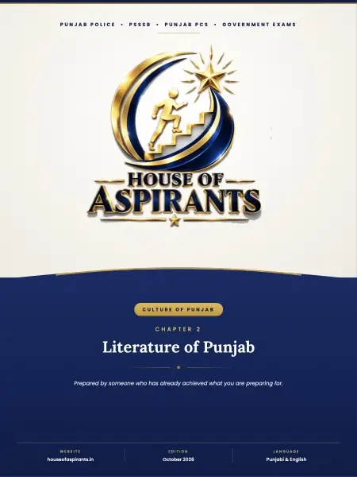

Finished reading? Check what you remember with a quick MCQ test.

Summary
PUNJAB POLICE • PSSSB • PUNJAB PCS • GOVERNMENT EXAMS CULTURE OF PUNJAB CHAPTER 2 Literature of Punjab ★ Prepared by someone who has already achieved what you are preparing for. WEBSITE houseofaspirants. in EDITION October 2026 LANGUAGE Punjabi & English
Download
Download Chapter 2: Literature of Punjab - Part 2 (English) (PDF) - 1.7 MB, 5 pages, hosted on this site. No sign-up, no email wall and no redirect through a third party.
About this file
- File name:
02 - Literature of Punjab.pdf - Pages: 5
- Size: 1.7 MB
- Published: 8 November 2026
- Filed under: Study Material
Where this file sits
- Subject: Culture of Punjab
- Language: English
- Part: Part 2 of 2
This page was generated automatically from content/study-material/culture-of-punjab/english/. Its subject, language and chapter come from the folders the file sits in, its part number from its place among the files beside it, and its title, slug and description from those. The page count and the summary were read out of the PDF itself - the file is the document.